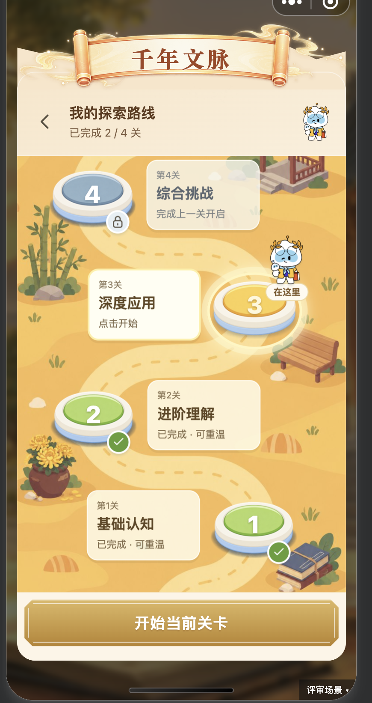
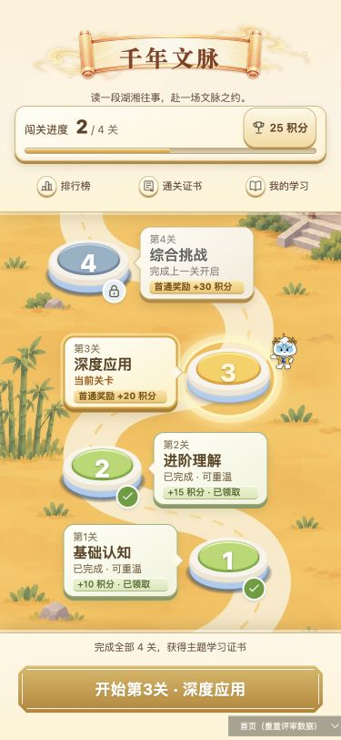
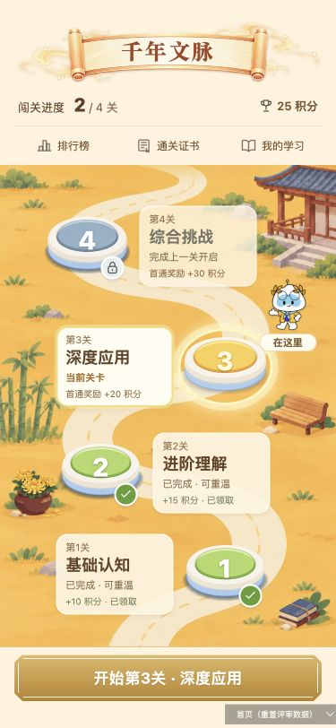
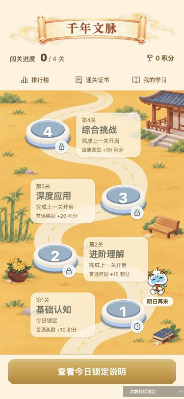
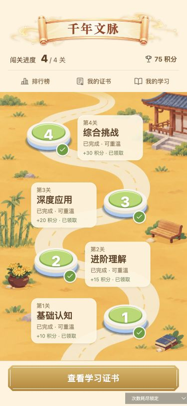

旧版参考

恢复这里的主次、场景道具与人物存在感。当前继续使用独立活动首页。
顶部减重，卡片与人物恢复比例；长椅、菊花、书籍回到场景边缘。首页仍直接进入当前关卡。

恢复这里的主次、场景道具与人物存在感。当前继续使用独立活动首页。

较重的进度面板、图标底座、关卡阴影和奖励条。

160px轻量顶部、18px关卡标题、60×70px人物与“在这里”提示，奖励改为次级文字。



四种状态、三种尺寸在内置浏览器检查；四种首页状态与第三关入口另经微信模拟器验证。示例进度使用独立内存，不会重置你的玩家记录。文化主题保留本轮修复；随后按你的补充反馈修正其余三套的标题对齐，见上方链接。手机真机和正式后台验收、上传发布不在本轮内。